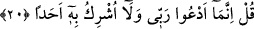
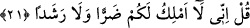
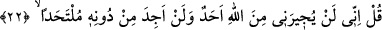

20. (Rasûlüm!) De ki: Ben ancak Rabbime yalvarırım ve O’na kimseyi ortak
koşmam.
Bu daha önce benzerini yapmadığım bir şey değil, hayret uyandıracak ve çirkin
görülecek bir hareket de değil. Yahut bana düşmanlığı gerektirecek bir hâl de değil. Bu
benim hâlim, sizin hâliniz de aynen böyle olsun.
21. De ki: Doğrusu ben (kendi başıma) size ne zarar verme ne de fayda sağlama
gücüne sâhibim.
Burada sanki şöyle denmiş oluyor: De ki ey müşrikler! Ben ne fayda vermeye ne zarar
vermeye, ne saptırmaya ne de doğru yola iletmeye mâlikim. Bütün bunlar benim elimde
değil, tam tersine Cenâb-ı Hakk’ın elindedir. Zarar veren, fayda veren, doğru yola ileten
ve sapıklığa sevkeden sâdece O’dur. Bu âyet-i kerîmede “zarar- fayda, eğrilik-doğru
yol” kavramlarından birinci gruptan “zarar” ikinci gruptan ise “doğru yol” zikredilerek
diğer ikisi zikredilmiyor. Bunun sebebi, birisi zikredildiğinde kendi zıddını çağrıştırmış
olması ve mânâ bakımından herhangi bir kaybın bulunmamasıdır. Şu hâlde bu âyet-i
kerîmede “ihtibak” sanatı vardır. Yâni mukâbili kendisine delâlet eden lâfızlar
hazfedilmiştir.
et-Tevilâtü’n-necmiyye’de şöyle deniyor: Peygamber Efendimiz (s.a.), “Abdullah”
diye Allah’a izâfe edilmesi itibârı ile kimseye ne bir zarar ne de fayda vermeye mâlik
değildir”. Nitekim Allah şöyle buyurur: “Sen sevdiğini hidâyete erdiremezsin, bilakis
Allah dilediğine hidâyet verir ve hidâyete girecek olanları en iyi O bilir.” (el-Kasas,
28/56) Fakat hak ve mutlak varlığı itibariyle Peygamber Efendimiz (s.a.) zarar
verebilir, doğru yolu gösterebilir. Nitekim Allah Teâlâ şöyle buyurur: “Şüphesiz ki sen
doğru bir yolu göstermektesin.” (eş-Şûra, 42/52)
Kâşânî bu âyet-i kerîmeyi şöyle tefsir ediyor: De ki doğrusu ben size ne bir zarar
vermeye ne de doğru yola iletme gücüne sâhibim. Sapıklığa düşürmek, hidâyete
erdirmek Cenâb-ı Hak’tandır. Eğer o bana yetki verirse sizler benim nûrumla doğru
yola, hidâyete erersiniz. Şâyet vermezse sapıklığınız içinde kalmaya devam edersiniz.
Benim sizi hidâyete girmeye zorlama gücüm yoktur.